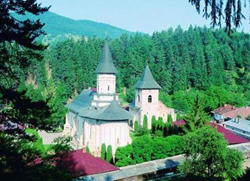

Mănăstirea Bistrița
 Mănăstirea Bistrița din județul Neamț se află în satul Bistrița, comuna Alexandru cel Bun și a fost zidită înainte de anul 1407 (prima atestare documentară) de către domnitorul Alexandru cel Bun al Moldovei (1400-1432), care a înzestrat-o cu sate, moșii și odoare scumpe. În anul 1498, Ștefan cel Mare a zidit un turn clopotniță, cu paraclis, închinat Sfântului Mucenic Ioan cel Nou de la Suceava, cu o pictură în frescă de o mare valoare artistică și iconografică, care se păstrează până astăzi. În 1546, Petru Rareș a renovat mănăstirea și a construit un zid împrejurul ei. Tot el i-a dăruit satul Mojeștii cu tot cu venitul produs de acesta. La 1554, Alexandru Lăpușneanu a renovat mănăstirea complet.
{kind=link}
Mănăstirea Bistrița este inclusă în Lista monumentelor istorice din România, având codul de clasificare NT-II-a-B-10593.
Scurt Istoric
Mănăstirea Bistrița are o foarte mare valoare istorică și arheologică. Este zidită în stil bizantin, bogat ornată, având ușa de la intrare păstrată din momentul construirii fiind lucrată cu multă artă. Se remarcă icoana Sfintei Ana, mama Maicii Domnului. După tradiție, această icoană a fost dată ca „dar de patron” Doamnei Ana, soția lui Alexandru cel Bun, de către împărăteasa Irena (Ana), soția împăratului bizantin Manuil al II-lea Paleologul (1391-1425) și de Patriarhul Matei, ai Constantinopolului, în 1401. Ulterior, familia voievodală dăruiește icoana Sfintei Ana Mănăstirii Bistrița.
Unul din principalele monumente istorice, vatră de credință și de cultură românească, ostrov al evlaviei străbune, cu o existență de mai bine de șase sute de ani, adăpostind oseminte domnești și fapte de neuitat din istoria și viața spirituală a neamului nostru este și Mănăstirea Bistrița din Județul Neamț. Ctitorie a patru voievozi mușatini, Alexandru cel Bun (1400-1432), Ștefan cel Mare (1457-1504), Petru Rareș (1527-1538, 1541-1546) și Alexandru Lăpușneanu (1552-1561), Mănăstirea Bistrița este locul în care a fost creat cel mai vechi monument al culturii noastre medievale, și anume, Pomelnicul de la Bistrița. Acest pomelnic oferă cele mai interesante date despre începutul istoriei voievodale și bisericești din Moldova. Pomelnicul de la Bistrița arată că, pentru români, cultura nu poate fi despărțită de cult și, de fapt, cultul este rădăcina cea mai adâncă a culturii noastre. În jurul Bisericii s-a plămădit și s-a binecuvântat, s-a consolidat și s-a transfigurat cultura noastră și istoria. De aceea, Mănăstirea Bistrița este taină și simbol pentru istoria neamului nostru. Este taină și simbol al statorniciei noastre în credința, a îmbinării dintre cult și cultură, a legăturii dintre istorie și veșnicie.
Cu toate că Mănăstirea Bistrița este una dintre ctitoriile cele mai de seamă ale Moldovei, ctitorie a patru domnitori, că are o vechime de mai bine de șase secole, că a avut un însemnat rol duhovnicesc și cultural, este cunoscută în mod nedrept de puțin. Mănăstirea Bistrița, alături de alte mănăstiri și vechi locașuri de cult, este reprezentativă pentru istoria, arhitectura și arta feudală românească.
Imagini de la Mănăstirea Bistrița
Icoana făcătoare de minuni a Sfintei Ana
Cel mai de preț odor cu care și-a înzestrat Alexandru cel Bun ctitoria sa, Mănăstirea Bistrița, a fost icoana Sfintei Ana, păstrată cu sfințenie până astăzi și cinstită cu multă evlavie de credincioșii creștini. După tradiție, acestă icoană ar fi fost dată ca „dar de patron” Doamnei Ana, soția lui Alexandru cel Bun, de către împărăteasa Irena (Ana), soția împăratului bizantin Manuil a al II-lea Paleologul (1391-1425) și de Patriarhul Matei, ai Constantinopolului, în 1401. Icoana a fost trimisă la Suceava prin delegații: ieromonahul Grigorie Țamblac și Manuil Arconti (Arhon).
La anul 1407-1408, Doamna Ana, însoțită de curteni și de Dionisie (Dometian), egumenul Mănăstirii Bistrița au dus cu alai domnesc și au dat dar veșnic icoana Sfintei Ana, Mănăstirii Bistrița . Un manuscris de la începutul secolului al XVIII-lea, atribuit Mitropolitului Gheorghe al Moldovei și Sucevei (1723-1729), păstrat la Arhivele Statului din Piatra Neamț, conține o informație semnată de sus-numitul mitropolit, privind donația icoanei Sfânta Ana de Manuil al II-lea Paleologul, familiei lui Alexandru cel Bun, din care cităm: ... Iar maica lui Andronic Paleolog îi mera numele Anna, împărăteasa lui Mănăil (Paleolog), și măria sa încă au trimis dar, Doamnei Annei fericitului Alexandru Vodă, o sfântă icoană, Sfânta Ana, maica Maicii Preacuratei, făcătoare de minuni, ferecată și împodobită cu cheltuială împărăteasă. Iar Măria sa, Doamna Ana, o au trimis dar Mănăstirii Bistrița, fiind făcută sfânta mănăstire de fericitul Alexandru V (oie) v (od) și Doamna Ana. Iar această sfântă icoană, la vreme de neploaie, scoțându-să cu litanie afară din mănăstire și făcând o sfeștanie, până ce să întoarce în mănăstire numai ce plouă, de nu peste tot, iar câtu-i hotarul mănăstirii... Și acestă istorie am scris eu cu condeiul meu, Mitropolitul Gheorghe, la anul 7231 (1724), februarie 19...
.
Icoana Sfintei Ana este una dintre cele mai vechi icoane voievodale din România, legată de evlavia credincioșilor, ca o icoană protectoare a familiei, a copiilor și a bolnavilor. Pentru aceasta icoana este deosebit de mult prețuită de toți, ca un odor străbun și dar de la Dumnezeu, spre mângâierea credincioșilor. În fața ei și-au plecat genunchii Alexandru cel Bun, cu soția și copii săi, Ștefan cel Mare, Petru Rareș, când era urmărit de Soliman Magnificul, apoi Alexandru Lăpușneanu și numeroși ierarhi, cronicari și dregători, ca și generații întregi de călugări, care au menținut aici nestinsă candela evlaviei, a credinței noastre ortodoxe și amintirea fericiților ctitori. În secolul al XVIII-lea icoana a fost restaurată, iar în anul 1853 a fost așezată într-o nouă strană de lemn sculptat și aurit, donată de Ieromonahul Varnava, egumenul Mănăstirii Pângărați, care s-a vindecat aici de o grea boală, cum reise din însemnarea de pe medalionul de deasupra ei.